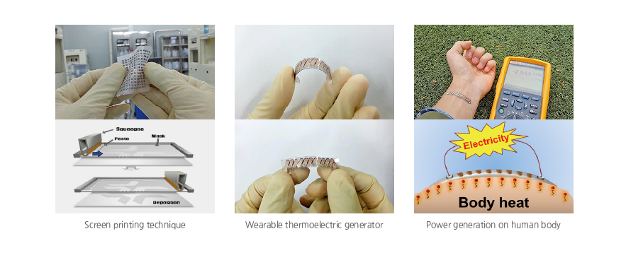

Top 10
Top 10
KAIST RESEARCH ACHIEVEMENTS
Wearable
Thermoelectric Device
Dept. of Electrical Engineering Byung Jin Cho
Summary
The era of IOT(Internet of Things) is just around the corner. When this era arrives, the most crucial technology will be sensors. Each person will have many sensors attached to their body, communicating with the things around them. Frequent charging of batteries to run these sensors would often be a hassle and make it impractical; thus, operating on self-powered system using energy harvesting technology would open up myriads of doors for the IOT era.
R&D Report
The self-powered sensor system for IOT requires the integration of energy harvesting technology and sensor networks. If body heat can be used to generate electricity, it will be an ideal system, operating wearable sensors practically anytime and anywhere.
When converting heat energy to electricity, thermo-electric generator(TEG) can be used. Because of the inconvenience of the conventional TEG, which is rigid and heavy and not wearable, a research to develop a TEG in a wearable form was done.

Fig 1. This new TEG will well be utilized as power source for wearable sensors. And this technology expects to find further applications in scale-up systems such as automobiles, aircrafts, vessels and power-plants
where abundant thermal energy is wasted.
Using screen printing technique and glass fabric, TEG was developed and proven to produce electricity from the heat of the human body. The conventional TEG is often ceramic based; so it is rigid and thermal energy loss is inevitable, reducing the efficiency of electricity generation. This newly invented TEG, on the other hand, complements the conventional TEG. This glass fabric-based TEG minimizes the thermal energy loss, maximizing the power output. This high-performance TEG is extremely light(0.13g/cm2) and extremely flexible as well, making it wearable.
Research results
ㆍJournal: "A wearable thermoelectric generator fabricated on a glass fabric", Energy & Environmental Science(impact factor: 15.49), 7, 1959-1965, 2014.
ㆍPatent: "FLEXIBLE THERMOELECTRIC DEVICE USING MESH SUBSTRATE AND FABRICATING METHOD THEREOF", patent registration in Korea(10-1493797), patent application in PCT, US, JP, CN, EP
ㆍPress release: ABC news, Discovery channel, Daily, Yahoo, CNET, etc.(foreign media reports), MBC NewsDesk, YTN TV News, Yonhap News, and many daily newspaper(local media reports)
ㆍUNESCO-Netexplo Award 2015 Grand Prix
ㆍTEGway start up for commercialization: Excellent enterprise selection in SK Telecom venture company contest, Dream Venture Star company selection in Daejeon Creative Economy Innovation Center
Research finance
ㆍMinistry of Science, ICT and Future Planning, KAIST